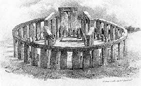

COSMOLABS
Artigos Científicos
Notícias e Discussões
Quem Somos?
Observação Solar
James Webb encontra centenas de “pequenos pontos vermelhos” no Universo antigo
Astrônomos investigam por que alguns buracos negros têm “batimento cardíaco”
Buracos negros: saiba o que são e conheça os diferentes tipos
Questionamento cósmico: Nasa divulga imagem de galáxia com formato de ponto de interrogação
Eclipse de 2017
SpaceX: primeira caminhada espacial comercial é concluída na missão Polaris Dawn
Vulcões alienígenas? Exoplaneta parece ter atmosfera infernal
Quais são as diferenças entre estrelas, anãs marrons e gigantes vermelhas?
Supernova cria uma estrela zumbi em evento cósmico raro
Nova ‘mini Terra’ é descoberta próxima do Sistema Solar
Meteoros ou Lixo espacial?
Cientistas descobrem grafeno formado naturalmente na Lua
O que são as constelações, como elas surgiram e quais são as mais famosas?
Telescópio brasileiro ajuda a descobrir exoplaneta com órbita de 11 anos
Jared Isaacman: quem é o bilionário que fez 1ª caminhada civil no espaço?
Júpiter em Oposição (2016).
Astrônomo: saiba tudo sobre a profissão
'Presos' no espaço, astronautas de cápsula da Boeing podem voltar somente em fevereiro de 2025
Pesquisadores descobrem novo vulcão gigante em uma das luas de Júpiter
Nasa mostra protótipo de telescópio que captará ondas gravitacionais no espaço

Astronomia Pré-Histórica
Imagem do “cometa do século” revela fenômeno inesperado em sua cauda
Distribuição da Matéria Escura no Universo: O que você e outras pessoas têm a dizer sobre isso?
Estudo sugere que sinal extraterrestre "wow!" seria, na verdade, um evento astronômico raro
Veja outras fontes de notícias aqui!
Olhar Digital
CNN Brasil
Astrofórum